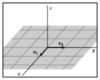
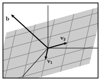
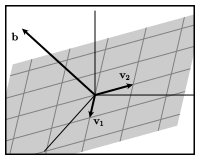

Section 2.3 The span of a set of vectors
¶Our work in this chapter enables us to rewrite a linear system in the form \(A\xvec = \bvec\text{.}\) Besides being a more compact way of expressing a linear system, this form allows us to think about linear systems geometrically since matrix multiplication is defined in terms of linear combinations of vectors.
We now return, in this and the next section, to the two fundamental questions asked in Question 1.4.2.
Existence: Is there a solution to the equation \(A\xvec=\bvec\text{?}\)
Uniqueness: If there is a solution to the equation \(A\xvec=\bvec\text{,}\) is it unique?
In this section, we focus on the existence question and introduce the concept of span to provide a framework for thinking about it geometrically.
Preview Activity 2.3.1. The existence of solutions.
If the equation \(A\xvec = \bvec\) is inconsistent, what can we say about the pivots of the augmented matrix \(\left[\begin{array}{r|r} A \amp \bvec \end{array}\right]\text{?}\)
-
Consider the matrix \(A\)
\begin{equation*} A = \left[ \begin{array}{rrr} 1 \amp 0 \amp -2 \\ -2 \amp 2 \amp 2 \\ 1 \amp 1 \amp -3 \end{array}\right]\text{.} \end{equation*}If \(\bvec=\threevec{2}{2}{5}\text{,}\) is the equation \(A\xvec = \bvec\) consistent? If so, find a solution.
If \(\bvec=\threevec{2}{2}{6}\text{,}\) is the equation \(A\xvec = \bvec\) consistent? If so, find a solution.
Identify the pivot positions of \(A\text{.}\)
For our two choices of the vector \(\bvec\text{,}\) one equation \(A\xvec = \bvec\) has a solution and the other does not. What feature of the pivot positions of the matrix \(A\) tells us to expect this?
Subsection 2.3.1 The span of a set of vectors
In the preview activity, we considered a \(3\times3\) matrix \(A\) and found that the equation \(A\xvec = \bvec\) has a solution for some vectors \(\bvec\) in \(\real^3\) and has no solution for others. We will introduce a concept called span that describes the vectors \(\bvec\) for which there is a solution.
Since we would like to think about this concept geometrically, we will consider an \(m\times n\) matrix \(A\) as being composed of \(n\) vectors in \(\real^m\text{;}\) that is,
Remember that Proposition 2.2.4 says that the equation \(A\xvec = \bvec\) is consistent if and only if we can express \(\bvec\) as a linear combination of \(\vvec_1,\vvec_2,\ldots,\vvec_n\text{.}\)
Definition 2.3.1.
The span of a set of vectors \(\vvec_1,\vvec_2,\ldots,\vvec_n\) is the set of all linear combinations of the vectors.
In other words, the span of \(\vvec_1,\vvec_2,\ldots,\vvec_n\) consists of all the vectors \(\bvec\) for which the equation
is consistent.
The span of a set of vectors has an appealing geometric interpretation. Remember that we may think of a linear combination as a recipe for walking in \(\real^m\text{.}\) We first move a prescribed amount in the direction of \(\vvec_1\text{,}\) then a prescribed amount in the direction of \(\vvec_2\text{,}\) and so on. As the following activity will show, the span consists of all the places we can walk to.
Activity 2.3.2.
Let's look at two examples to develop some intuition for the concept of span.
-
First, we will consider the set of vectors
\begin{equation*} \vvec = \twovec{1}{2}, \wvec = \twovec{-2}{-4}\text{.} \end{equation*}The diagram below can be used to construct linear combinations whose weights \(a\) and \(b\) may be varied using the sliders at the top. The vectors \({\mathbf v}\) and \({\mathbf w}\) are drawn in gray while the linear combination $$ a{\mathbf v} + b{\mathbf w} $$ is in red.
-
What vector is the linear combination of \(\vvec\) and \(\wvec\) with weights:
\(a = 2\) and \(b=0\text{?}\)
\(a = 1\) and \(b=1\text{?}\)
\(a = 0\) and \(b=-1\text{?}\)
Can the vector \(\twovec{2}{4}\) be expressed as a linear combination of \(\vvec\) and \(\wvec\text{?}\) Is the vector \(\twovec{2}{4}\) in the span of \(\vvec\) and \(\wvec\text{?}\)
Can the vector \(\twovec{3}{0}\) be expressed as a linear combination of \(\vvec\) and \(\wvec\text{?}\) Is the vector \(\twovec{3}{0}\) in the span of \(\vvec\) and \(\wvec\text{?}\)
Describe the set of vectors in the span of \(\vvec\) and \(\wvec\text{.}\)
-
For what vectors \(\bvec\) does the equation
\begin{equation*} \left[\begin{array}{rr} 1 \amp -2 \\ 2 \amp -4 \end{array}\right] \xvec = \bvec \end{equation*}have a solution?
-
-
We will now look at an example where
\begin{equation*} \vvec = \twovec{2}{1}, \wvec = \twovec{1}{2}\text{.} \end{equation*}In a similar way, the diagram below can be used to construct linear combinations $$ a{\mathbf v} + b{\mathbf w}\text{.} $$
-
What vector is the linear combination of \(\vvec\) and \(\wvec\) with weights:
\(a = 2\) and \(b=0\text{?}\)
\(a = 1\) and \(b=1\text{?}\)
\(a = 0\) and \(b=-1\text{?}\)
Can the vector \(\twovec{-2}{2}\) be expressed as a linear combination of \(\vvec\) and \(\wvec\text{?}\) Is the vector \(\twovec{-2}{2}\) in the span of \(\vvec\) and \(\wvec\text{?}\)
Can the vector \(\twovec{3}{0}\) be expressed as a linear combination of \(\vvec\) and \(\wvec\text{?}\) Is the vector \(\twovec{3}{0}\) in the span of \(\vvec\) and \(\wvec\text{?}\)
Describe the set of vectors in the span of \(\vvec\) and \(\wvec\text{.}\)
-
For what vectors \(\bvec\) does the equation
\begin{equation*} \left[\begin{array}{rr} 2 \amp 1 \\ 1 \amp 2 \end{array}\right] \xvec = \bvec \end{equation*}have a solution?
-
Let's consider the first example in the previous activity. Here, the vectors \(\vvec\) and \(\wvec\) are scalar multiples of one another, which means that they lie on the same line. When we form linear combinations, we are allowed to walk only in the direction of \(\vvec\) and \(\wvec\text{,}\) which means we are constrained to stay on this same line. Therefore, the span of \(\vvec\) and \(\wvec\) consists only of this line.
With this choice of vectors \(\vvec\) and \(\wvec\text{,}\) all linear combinations lie on the line shown. This line, therefore, is the span of the vectors \(\vvec\) and \(\wvec\text{.}\)
We may see this algebraically since the vector \(\wvec = -2\vvec\text{.}\) Consequently, when we form a linear combination of \(\vvec\) and \(\wvec\text{,}\) we see that
Therefore, any linear combination of \(\vvec\) and \(\wvec\) reduces to a scalar multiple of \(\vvec\text{,}\) and we have seen that the scalar multiples of a nonzero vector form a line.
In the second example, however, the vectors are not scalar multiples of one another, and we see that we can construct any vector in \(\real^2\) as a linear combination of \(\vvec\) and \(\wvec\text{.}\)
With this choice of vectors \(\vvec\) and \(\wvec\text{,}\) we are able to form any vector in \(\real^2\) as a linear combination. Therefore, the span of the vectors \(\vvec\) and \(\wvec\) is the entire plane, \(\real^2\text{.}\)
Once again, we can see this algebraically. Asking if the vector \(\bvec\) is in the span of \(\vvec\) and \(\wvec\) is the same as asking if the linear system
is consistent.
The augmented matrix for this system is
Since it is impossible to obtain a pivot in the rightmost column, we know that this system is consistent no matter what the vector \(\bvec\) is. Therefore, every vector \(\bvec\) in \(\real^2\) is in the span of \(\vvec\) and \(\wvec\text{.}\)
In this case, notice that the reduced row echelon form of the matrix
has a pivot in every row. When this happens, it is not possible for any augmented matrix to have a pivot in the rightmost column. Therefore, the linear system is consistent for every vector \(\bvec\text{,}\) which implies that the span of \(\vvec\) and \(\wvec\) is \(\real^2\text{.}\)
Notation 2.3.4.
We will denote the span of the set of vectors \(\vvec_1,\vvec_2,\ldots,\vvec_n\) by \(\span{\vvec_1,\vvec_2,\ldots,\vvec_n}\text{.}\)
Subsection 2.3.2 Pivot positions and span
In the previous activity, we saw two examples, both of which considered two vectors \(\vvec\) and \(\wvec\) in \(\real^2\text{.}\) In one example, the \(\span{\vvec,\wvec}\) consisted of a line; in the other, the \(\span{\vvec,\wvec}=\real^2\text{.}\) We would like to be able to distinguish these two situations in a more algebraic fashion. After all, we will need to be able to deal with vectors in many more dimensions where we will not be able to draw pictures.
The key is found by looking at the pivot positions of the matrix \(\left[\begin{array}{rrrr} \vvec_1\amp\vvec_2\amp\ldots\vvec_n \end{array}\right] \text{.}\) In the first example, the matrix whose columns are \(\vvec\) and \(\wvec\) is
which has exactly one pivot position. We found the \(\span{\vvec,\wvec}\) to be a line, in this case.
In the second example, this matrix is
which has two pivot positions. Here, we found \(\span{\vvec,\wvec}=\real^2\text{.}\)
These examples point to the fact that the size of the span is related to the number of pivot positions. We will develop this idea more fully in Section 2.4 and Section 3.5. For now, however, we will examine the possibilities in \(\real^3\text{.}\)
Activity 2.3.3.
In this activity, we will look at the span of sets of vectors in \(\real^3\text{.}\)
Suppose \(v=\threevec{1}{2}{1}\text{.}\) Give a written description of \(\span{v}\) and a rough sketch of it below.

-
Consider now the two vectors
\begin{equation*} \evec_1 = \threevec{1}{0}{0}, \evec_2 = \threevec{0}{1}{0}\text{.} \end{equation*}Sketch the vectors below. Then give a written description of \(\span{\evec_1,\evec_2}\) and a rough sketch of it below.
Let's now look at this algebraically by writing write \(\bvec = \threevec{b_1}{b_2}{b_3}\text{.}\) Determine the conditions on \(b_1\text{,}\) \(b_2\text{,}\) and \(b_3\) so that \(\bvec\) is in \(\span{\evec_1,\evec_2}\) by considering the linear system
\begin{equation*} \left[\begin{array}{rr} \evec_1 \amp \evec_2 \\ \end{array}\right] \xvec = \bvec \end{equation*}or
\begin{equation*} \left[\begin{array}{rr} 1 \amp 0 \\ 0 \amp 1 \\ 0 \amp 0 \\ \end{array}\right] \xvec = \threevec{b_1}{b_2}{b_3}\text{.} \end{equation*}Explain how this relates to your sketch of \(\span{\evec_1,\evec_2}\text{.}\)
-
Consider the vectors
\begin{equation*} \vvec_1 = \threevec{1}{1}{-1}, \vvec_2 = \threevec{0}{2}{1}\text{.} \end{equation*}Is the vector \(\bvec=\threevec{1}{-2}{4}\) in \(\span{\vvec_1,\vvec_2}\text{?}\)
Is the vector \(\bvec=\threevec{-2}{0}{3}\) in \(\span{\vvec_1,\vvec_2}\text{?}\)
Give a written description of \(\span{\vvec_1,\vvec_2}\text{.}\)
-
Consider the vectors
\begin{equation*} \vvec_1 = \threevec{1}{1}{-1}, \vvec_2 = \threevec{0}{2}{1}, \vvec_3 = \threevec{1}{-2}{4}\text{.} \end{equation*}Form the matrix \(\left[\begin{array}{rrrr} \vvec_1 \amp \vvec_2 \amp \vvec_3 \end{array}\right]\) and find its reduced row echelon form.
What does this tell you about \(\span{\vvec_1,\vvec_2,\vvec_3}\text{?}\) If a set of vectors \(\vvec_1,\vvec_2,\ldots,\vvec_n\) spans \(\real^3\text{,}\) what can you say about the pivots of the matrix \(\left[\begin{array}{rrrr} \vvec_1\amp\vvec_2\amp\ldots\amp\vvec_n \end{array}\right]\text{?}\)
What is the smallest number of vectors such that \(\span{\vvec_1,\vvec_2,\ldots,\vvec_n} = \real^3\text{?}\)
This activity shows us the types of sets that can appear as the span of a set of vectors in \(\real^3\text{.}\)
-
First, with a single vector, all linear combinations are simply scalar multiples of that vector, which creates a line.
Notice that the matrix formed by this vector has one pivot, just as in our earlier example in \(\real^2\text{.}\) \begin{equation*} \threevec{1}{2}{1} \sim \threevec{1}{0}{0}\text{.} \end{equation*}
\begin{equation*} \threevec{1}{2}{1} \sim \threevec{1}{0}{0}\text{.} \end{equation*} -
When we consider linear combinations of the vectors
\begin{equation*} \evec_1 = \threevec{1}{0}{0}, \evec_2 = \threevec{0}{1}{0}\text{,} \end{equation*}we must obtain vectors of the form
\begin{equation*} a\evec_1 + b\evec_2 = a\threevec{1}{0}{0}+b\threevec{0}{1}{0} = \threevec{a}{b}{0}\text{.} \end{equation*}Since the third component is zero, these vectors form the plane \(z=0\text{.}\)
Notice here that the matrix composed of the vectors has two pivot positions.\begin{equation*} \left[\begin{array}{rr} 1 \amp 0 \\ 0 \amp 1 \\ 0 \amp 0 \\ \end{array}\right]\text{.} \end{equation*} -
Similarly, the span of the vectors
\begin{equation*} \vvec_1 = \threevec{1}{1}{-1}, \vvec_2 = \threevec{0}{2}{1}\text{,} \end{equation*}will form a plane.
We saw one vector \(\bvec\) that was not in \(\span{\vvec_1,\vvec_2}\) and one that is. Once again, the matrix\begin{equation*} \left[\begin{array}{rr} \vvec_1 \amp \vvec_2 \end{array}\right] = \left[\begin{array}{rr} 1 \amp 0 \\ 1 \amp 2 \\ -1 \amp 1 \\ \end{array}\right] \sim \left[\begin{array}{rr} 1 \amp 0 \\ 0 \amp 1 \\ 0 \amp 0 \\ \end{array}\right] \end{equation*}
Once again, the matrix\begin{equation*} \left[\begin{array}{rr} \vvec_1 \amp \vvec_2 \end{array}\right] = \left[\begin{array}{rr} 1 \amp 0 \\ 1 \amp 2 \\ -1 \amp 1 \\ \end{array}\right] \sim \left[\begin{array}{rr} 1 \amp 0 \\ 0 \amp 1 \\ 0 \amp 0 \\ \end{array}\right] \end{equation*}has two pivot positions.
-
Finally, we looked at a set of vectors whose matrix
\begin{equation*} \left[\begin{array}{rrr} \vvec_1 \amp \vvec_2 \amp \vvec_3 \end{array}\right] = \left[\begin{array}{rrr} 1 \amp 0 \amp 1 \\ 1 \amp 2 \amp -2 \\ -1 \amp 1 \amp 4 \\ \end{array}\right] \sim \left[\begin{array}{rrr} 1 \amp 0 \amp 0 \\ 0 \amp 1 \amp 0 \\ 0 \amp 0 \amp 1 \\ \end{array}\right] \end{equation*}has three pivot positions, one in every row. This is significant because it means that if we consider an augmented matrix
\begin{equation*} \left[\begin{array}{rrr|r} 1 \amp 0 \amp 1 \amp *\\ 1 \amp 2 \amp -2 \amp * \\ -1 \amp 1 \amp 4 \amp * \\ \end{array}\right] \sim \left[\begin{array}{rrr|r} 1 \amp 0 \amp 0 \amp *\\ 0 \amp 1 \amp 0 \amp * \\ 0 \amp 0 \amp 1 \amp * \\ \end{array}\right]\text{,} \end{equation*}there cannot be a pivot position in the rightmost column. This linear system is consistent for every vector \(\bvec\text{,}\) which tells us that \(\span{\vvec_1,\vvec_2,\vvec_3} = \real^3\text{.}\)
To summarize, we looked at the pivot positions in the matrix whose columns were the vectors \(\vvec_1,\vvec_2,\ldots,\vvec_n\text{.}\) We found that with
one pivot position, the span was a line.
two pivot positions, the span was a plane.
three pivot positions, the span was \(\real^3\text{.}\)
Once again, we will develop these ideas more fully in the next and subsequent sections. However, we saw that, when considering vectors in \(\real^3\text{,}\) a pivot position in every row implied that the span of the vectors is \(\real^3\text{.}\) The same reasoning applies more generally.
Proposition 2.3.5.
Suppose we have vectors \(\vvec_1,\vvec_2,\ldots,\vvec_n\) in \(\real^m\text{.}\) Then \(\span{\vvec_1,\vvec_2,\ldots,\vvec_n}=\real^m\) if and only if the matrix \(\left[\begin{array}{rrrr} \vvec_1\amp\vvec_2\amp\ldots\amp\vvec_n \end{array}\right]\) has a pivot position in every row.
This tells us something important about the number of vectors needed to span \(\real^m\text{.}\) Suppose we have \(n\) vectors \(\vvec_1,\vvec_2,\ldots,\vvec_n\) that span \(\real^m\text{.}\) The proposition tells us that the matrix \(A = \left[\begin{array}{rrrr} \vvec_1\amp\vvec_2\ldots\vvec_n \end{array}\right]\) has a pivot position in every row, such as in this reduced row echelon matrix.
Since a matrix can have at most one pivot position in a column, there must be at least as many columns as there are rows, which implies that \(n\geq m\text{.}\)
For instance, if we have a set of vectors that span \(\real^{632}\text{,}\) there must be at least 632 vectors in the set.
Proposition 2.3.6.
If a set of vectors span \(\real^m\text{,}\) there must be at least \(m\) vectors in the set.
This makes sense intuitively. We have thought about a linear combination of a set of vectors \(\vvec_1,\vvec_2,\ldots,\vvec_n\) as the result of walking a certain distance in the direction of \(\vvec_1\text{,}\) followed by walking a certain distance in the direction of \(\vvec_2\text{,}\) and so on. If \(\span{\vvec_1,\vvec_2,\ldots,\vvec_n} = \real^m\text{,}\) this means that we can walk to any point in \(\real^m\) using the directions \(\vvec_1,\vvec_2,\ldots,\vvec_n\text{.}\) It makes sense that we would need at least \(m\) directions to give us the flexibilty needed to reach any point in \(\real^m\text{.}\)
Subsection 2.3.3 Summary
We defined the span of a set of vectors and developed some intuition for this concept through a series of examples.
The span of a set of vectors \(\vvec_1,\vvec_2,\ldots,\vvec_n\) is the set of linear combinations of the vectors. We denote the span by \(\span{\vvec_1,\vvec_2,\ldots,\vvec_n}\text{.}\)
-
A vector \(\bvec\) is in \(\span{\vvec_1,\vvec_2,\ldots,\vvec_n}\) if an only if the linear system
\begin{equation*} \left[\begin{array}{rrrr} \vvec_1\amp\vvec_2\amp\ldots\vvec_n \end{array}\right] \xvec = \bvec \end{equation*}is consistent.
-
If the \(m\times n\) matrix
\begin{equation*} \left[\begin{array}{rrrr} \vvec_1\amp\vvec_2\amp\ldots\vvec_n \end{array}\right] \end{equation*}has a pivot in every row, then the span of these vectors is \(\real^m\text{;}\) that is, \(\span{\vvec_1,\vvec_2,\ldots,\vvec_n} = \real^m\text{.}\)
Any set of vectors that spans \(\real^m\) must have at least \(m\) vectors.
Exercises 2.3.4 Exercises
1.
In this exercise, we will consider the span of some sets of two- and three-dimensional vectors.
-
Consider the vectors
\begin{equation*} \vvec_1 = \twovec{1}{-2}, \vvec_2 = \twovec{4}{3}\text{.} \end{equation*}Is \(\bvec = \twovec{2}{1}\) in \(\span{\vvec_1,\vvec_2}\text{?}\)
Give a written description of \(\span{\vvec_1,\vvec_2}\text{.}\)
-
Consider the vectors
\begin{equation*} \vvec_1=\threevec{2}{1}{3}, \vvec_2=\threevec{-2}{0}{2}, \vvec_3=\threevec{6}{1}{-1}\text{.} \end{equation*}Is the vector \(\bvec=\threevec{-10}{-1}{5}\) in \(\span{\vvec_1,\vvec_2,\vvec_3}\text{?}\)
Is the vector \(\vvec_3\) in \(\span{\vvec_1,\vvec_2,\vvec_3}\text{?}\)
Is the vector \(\bvec=\threevec{3}{3}{-1}\) in \(\span{\vvec_1,\vvec_2,\vvec_3}\text{?}\)
Give a written description of \(\span{\vvec_1,\vvec_2,\vvec_3}\text{.}\)
2.
Provide a justification for your response to the following questions.
Suppose you have a set of vectors \(\vvec_1,\vvec_2,\ldots,\vvec_n\text{.}\) Can you guarantee that \(\zerovec\) is in \(\span{\vvec_1\,\vvec_2,\ldots,\vvec_n}\text{?}\)
Suppose that \(A\) is an \(m \times n\) matrix. Can you guarantee that the equation \(A\xvec = \zerovec\) is consistent?
What is \(\span{\zerovec,\zerovec,\ldots,\zerovec}\text{?}\)
3.
For both parts of this exericse, give a written description of sets of the vectors \(\bvec\) and include a sketch.
-
For which vectors \(\bvec\) in \(\real^2\) is the equation
\begin{equation*} \left[\begin{array}{rr} 3 \amp -6 \\ -2 \amp 4 \\ \end{array}\right] \xvec = \bvec \end{equation*}consistent?
-
For which vectors \(\bvec\) in \(\real^2\) is the equation
\begin{equation*} \left[\begin{array}{rr} 3 \amp -6 \\ -2 \amp 2 \\ \end{array}\right] \xvec = \bvec \end{equation*}consistent?
4.
Consider the following matrices:
Do the columns of \(A\) span \(\real^4\text{?}\) Do the columns of \(B\) span \(\real^4\text{?}\)
5.
Determine whether the following statements are true or false and provide a justification for your response. Throughout, we will assume that the matrix \(A\) has columns \(\vvec_1,\vvec_2,\ldots,\vvec_n\text{;}\) that is,
If the equation \(A\xvec = \bvec\) is consistent, then \(\bvec\) is in \(\span{\vvec_1,\vvec_2,\ldots,\vvec_n}\text{.}\)
The equation \(A\xvec = \vvec_1\) is always consistent.
If \(\vvec_1\text{,}\) \(\vvec_2\text{,}\) \(\vvec_3\text{,}\) and \(\vvec_4\) are vectors in \(\real^3\text{,}\) then their span is \(\real^3\text{.}\)
If \(\bvec\) can be expressed as a linear combination of \(\vvec_1, \vvec_2,\ldots,\vvec_n\text{,}\) then \(\bvec\) is in \(\span{\vvec_1,\vvec_2,\ldots,\vvec_n}\text{.}\)
If \(A\) is a \(8032\times 427\) matrix, then the span of the columns of \(A\) is a set of vectors in \(\real^{427}\text{.}\)
6.
This exercise asks you to construct some matrices whose columns span a given set.
Construct a \(3\times3\) matrix whose columns span \(\real^3\text{.}\)
Construct a \(3\times3\) matrix whose columns span a plane in \(\real^3\text{.}\)
Construct a \(3\times3\) matrix whose columns span a line in \(\real^3\text{.}\)
7.
Provide a justification for your response to the following questions.
Suppose that we have vectors in \(\real^8\text{,}\) \(\vvec_1,\vvec_2,\ldots,\vvec_{10}\text{,}\) whose span is \(\real^8\text{.}\) Can every vector \(\bvec\) in \(\real^8\) be written as a linear combination of \(\vvec_1,\vvec_2,\ldots,\vvec_{10}\text{?}\)
Suppose that we have vectors in \(\real^8\text{,}\) \(\vvec_1,\vvec_2,\ldots,\vvec_{10}\text{,}\) whose span is \(\real^8\text{.}\) Can every vector \(\bvec\) in \(\real^8\) be written uniquely as a linear combination of \(\vvec_1,\vvec_2,\ldots,\vvec_{10}\text{?}\)
-
Do the vectors
\begin{equation*} \evec_1=\threevec{1}{0}{0}, \evec_2=\threevec{0}{1}{0}, \evec_3=\threevec{0}{0}{1} \end{equation*}span \(\real^3\text{?}\)
Suppose that \(\vvec_1,\vvec_2,\ldots,\vvec_n\) span \(\real^{438}\text{.}\) What can you guarantee about the value of \(n\text{?}\)
Can 17 vectors in \(\real^{20}\) span \(\real^{20}\text{?}\)
8.
The following observation will be helpful in this exericse. If we want to find a solution to the equation \(AB\xvec = \bvec\text{,}\) we could first find a solution to the equation \(A\yvec = \bvec\) and then find a solution to the equation \(B\xvec = \yvec\text{.}\)
Suppose that \(A\) is a \(3\times 4\) matrix whose columns span \(\real^3\) and \(B\) is a \(4\times 5\) matrix. In this case, we can form the product \(AB\text{.}\)
What are the dimensions of the product \(AB\text{?}\)
Can you guarantee that the columns of \(AB\) span \(\real^3\text{?}\)
If you know additionally that the span of the columns of \(B\) is \(\real^4\text{,}\) can you guarantee that the columns of \(AB\) span \(\real^3\text{?}\)
9.
Suppose that \(A\) is a \(12\times12\) matrix and that, for some vector \(\bvec\text{,}\) the equation \(A\xvec=\bvec\) has a unique solution.
What can you say about the pivot positions of \(A\text{?}\)
What can you say about the span of the columns of \(A\text{?}\)
If \(\cvec\) is some other vector in \(\real^{12}\text{,}\) what can you conclude about the equation \(A\xvec = \cvec\text{?}\)
What can you about the solution space to the equation \(A\xvec =\zerovec\text{?}\)
10.
Suppose that
Is \(\vvec_3\) a linear combination of \(\vvec_1\) and \(\vvec_2\text{?}\) If so, find weights such that \(\vvec_3 = a\vvec_1+b\vvec_2\text{.}\)
-
Show that a linear combination
\begin{equation*} a\vvec_1 + b\vvec_2 + c\vvec_3 \end{equation*}can be rewritten as a linear combination of \(\vvec_1\) and \(\vvec_2\text{.}\)
Explain why \(\span{\vvec_1,\vvec_2,\vvec_3} = \span{\vvec_1,\vvec_2}\text{.}\)
11.
As defined in this section, the span of a set of vectors is generated by taking all possible linear combinations of those vectors. This exericse will demonstrate the fact that the span can also be realized as the solution space to a linear system.
We will consider the vectors
Is every vector in \(\real^3\) in \(\span{\vvec_1,\vvec_2,\vvec_3}\text{?}\) If not, describe the span.
-
To describe \(\span{\vvec_1,\vvec_2,\vvec_3}\) as the solution space of a linear system, we will write
\begin{equation*} \bvec=\threevec{a}{b}{c}\text{.} \end{equation*}If \(\bvec\) is in \(\span{\vvec_1,\vvec_2,\vvec_3}\text{,}\) then the linear system corresponding to the augmented matrix
\begin{equation*} \left[\begin{array}{rrr|r} 1 \amp 2 \amp 1 \amp a \\ 0 \amp 1 \amp 1 \amp b \\ -2\amp 0 \amp 2 \amp c \\ \end{array}\right] \end{equation*}must be consistent. This means that a pivot cannot occur in the rightmost column. Perform row operations to put this augmented matrix into a triangular form. Now identify an equation in \(a\text{,}\) \(b\text{,}\) and \(c\) that tells us when there is no pivot in the rightmost column. The solution space to this equation describes \(\span{\vvec_1,\vvec_2,\vvec_3}\text{.}\)
In this example, the matrix formed by the vectors \(\left[\begin{array}{rrr} \vvec_1\amp\vvec_2\amp\vvec_2 \\ \end{array}\right]\) has two pivot positions. Suppose we were to consider another example in which this matrix had had only one pivot position. How would this have changed the linear system describing \(\span{\vvec_1,\vvec_2,\vvec_3}\text{?}\)